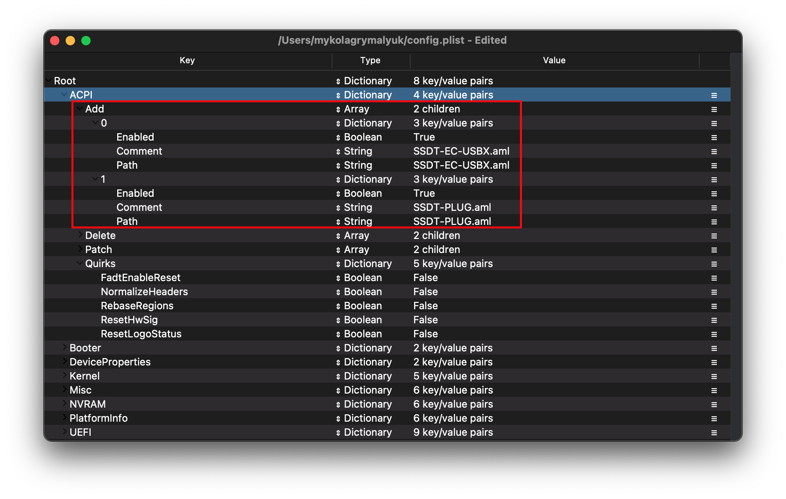
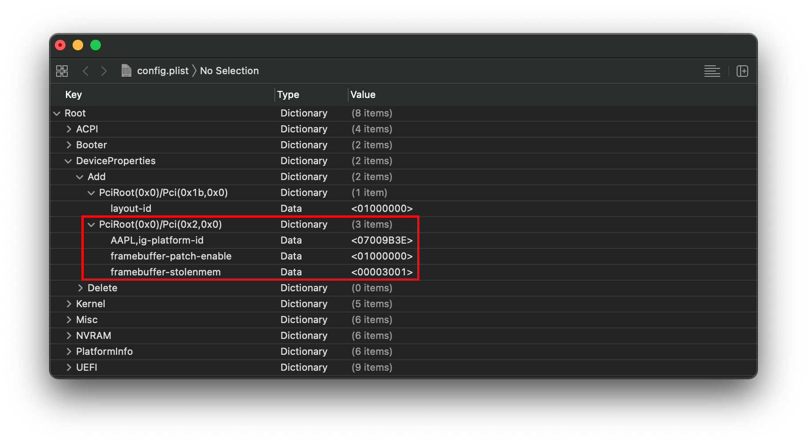

Last modified: Tue Jun 09 2020 01:44:57 GMT+0000 (Coordinated Universal Time)
Coffee Lake
- Supported version: 0.5.9
- Coffee Lake Laptop Guide
1. Starting Point
So making a config.plist may seem hard, its not. It just takes some time but this guide will tell you how to configure everything, you won't be left in the cold. This also means if you have issues, review your config settings to make sure they're correct. Main things to note with OpenCore:
- All properties must be defined, there are no default OpenCore will fall back on so do not delete sections unless told explicitly so. If the guide doesn't mention the option, leave it at default.
- The Sample.plist cannot be used As-Is, you must configure it to your system
- DO NOT USE CONFIGURATORS, these rarely respect OpenCore's configuration and even some like Mackie's will add Clover properties and corrupt plists!
Now with all that, we'll need some things to get started:
- ProperTree: For editing our config, this editor has some super useful tools for OpenCore
- GenSMBIOS: For generating our SMBIOS
- Sample.plist: This is found under the Docs folder of the release download
Now with those downloaded, we can get to really get started:
- Grab the Sample.plist and rename to config.plist
- Open your new config.plist in ProperTree
- macOS:
ProperTree.command - Windows:
ProperTree.bat
- macOS:
- Run the Clean Snapshot function(Cmd/Ctrl + Shift + R and point it at your EFI/OC folder),
- This will remove all the entries from the config.plist and then adds all your SSDTs, Kexts and Firmware drivers to the config
- Cmd+R is another option that will add all your files as well but will leave entries disabled if they were set like that before, useful for when you're troubleshooting
And read this guide more than once before setting up OpenCore and make sure you have it set up correctly. Do note that images will not always be the most up-to-date so please read the text below them, if nothing's mentioned then leave as default.
2. ACPI

2.1. Add
This is where you'll add SSDTs for your system, these are very important to booting macOS and have many uses like USB maps, disabling unsupported GPUs and such. And with our system, its even required to boot. Guide on making them found here: Getting started with ACPI
For us we'll need a couple of SSDTs to bring back functionality that Clover provided:
| Required_SSDTs | Description |
|---|---|
| SSDT-PLUG | Allows for native CPU power management on Haswell and newer. A pre-built can be found here if you have issues: SSDT-PLUG-DRTNIA |
| SSDT-EC-USBX | Hides the Embedded controller and creates a fake one for macOS, *needed for all Catalina users and recommended for other versions of macOS. This SSDT also has a second function, USBX. This is used for forcing USB power properties, requires SSDT-EC so this just jumbles them together. A pre-built can be found here if you have issues: SSDT-EC-USBX-DESKTOP |
| SSDT-AWAC | This is the 300 series RTC patch, required for most B360, B365, H310, H370, Z390 and some Z370 boards which prevent systems from booting macOS. The alternative is SSDT-RTC0 for when AWAC SSDT is incompatible due to missing the Legacy RTC clock, to check whether you need it and which to use please see Getting started with ACPI page. |
| SSDT-PMC | So true 300 series motherboards(non-Z370) don't declare the FW chip as MMIO in ACPI and so XNU ignores the MMIO region declared by the UEFI memory map. This SSDT brings back NVRAM support. Pre-built can be found here if you have issues: SSDT-PMC.aml |
Note that you should not add your generated DSDT.aml here, it is already in your firmware. So if present, remove the entry for it in your config.plist and under EFI/OC/ACPI.
For those wanting a deeper dive into dumping your DSDT, how to make these SSDTs, and compiling them, please see the Getting started with ACPI page. Compiled SSDTs have a .aml extension(Assembled) and will go into the EFI/OC/ACPI folder and must be specified in your config under ACPI -> Add as well.
2.2. Delete
This blocks certain ACPI tables from loading, for us we can ignore this.
2.3. Patch
This section allows us to dynamically modify parts of the ACPI (DSDT, SSDT, etc.) via OpenCore. For us, our patches are handled by our SSDTs. This is a much cleaner solution as this will allow us to boot Windows and other OSes with OpenCore
2.4. Quirks
Settings relating to ACPI, leave everything here as default.
- FadtEnableReset: NO
- Enable reboot and shutdown on legacy hardware, not recommended unless needed
- NormalizeHeaders: NO
- Cleanup ACPI header fields, only relevant for macOS High Sierra 10.13
- RebaseRegions: NO
- Attempt to heuristically relocate ACPI memory regions, not needed unless custom DSDT is used.
- ResetHwSig: NO
- Needed for hardware that fails to maintain hardware signature across the reboots and cause issues with waking from hibernation
- ResetLogoStatus: NO
- Workaround for OEM Windows logo not drawing on systems with BGRT tables.
3. Booter

This section is dedicated to quirks relating to boot.efi patching with OpenRuntime, the replacement for AptioMemoryFix.efi
3.1. MmioWhitelist
This section is allowing devices to be passthrough to macOS that are generally ignored, for us we can ignore this section.
3.2. Quirks
Settings relating to boot.efi patching and firmware fixes, ones we need to change are DevirtualiseMmio, RebuildAppleMemoryMap, SyncRuntimePermissions and SetupVirtualMap
- AvoidRuntimeDefrag: YES
- Fixes UEFI runtime services like date, time, NVRAM, power control, etc
- DevirtualiseMmio: YES
- Reduces Stolen Memory Footprint, expands options for
slide=Nvalues and very helpful with fixing Memory Allocation issues on Z390. RequiresProtectUefiServicesas well on IceLake and Z390 Coffee Lake
- Reduces Stolen Memory Footprint, expands options for
- DisableSingleUser: NO
- Disables the use of
Cmd+Sand-s, this is closer to the behavior of T2 based machines
- Disables the use of
- DisableVariableWrite: NO
- Needed for systems with non-functioning NVRAM, you can verify here if yours works
- DiscardHibernateMap: NO
- Reuse original hibernate memory map, only needed for certain legacy hardware
- EnableSafeModeSlide: YES
- Allows for slide values to be used in Safe mode
- EnableWriteUnprotector: YES
- Removes write protection from CR0 register during their execution
- ForceExitBootServices: NO
- Ensures ExitBootServices calls succeeds even when the Memory Map has changed, don't use unless necessary
- ProtectMemoryRegions: NO
- Needed for fixing artifacts and sleep-wake issues, generally only needed on very old firmwares
- ProtectSecureBoot: NO
- Fixes Secure Boot keys on MacPro5,1 and Insyde firmwares
- ProtectUefiServices: NO
- Protects UEFI services from being overridden by the firmware, mainly relevant for VMs, Icelake and Z390 systems'
- If on Z390, enable this quirk
- ProvideCustomSlide: YES
- If there's a conflicting slide value, this option forces macOS to use a pseudo-random value. Needed for those receiving
Only N/256 slide values are usable!debug message
- If there's a conflicting slide value, this option forces macOS to use a pseudo-random value. Needed for those receiving
- RebuildAppleMemoryMap: YES
- Generates Memory Map compatible with macOS, can break on some laptop OEM firmwares so if you receive early boot failures disable this
- SetupVirtualMap: YES
- Fixes SetVirtualAddresses calls to virtual addresses, shouldn't be needed on Skylake and newer. Some firmware like Gigabyte may still require it, and will kernel panic without this
- SignalAppleOS: NO
- Tricks the hardware into thinking its always booting macOS, mainly beneficial for MacBook Pro's with dGPUs as booting Windows won't allow for the iGPU to be used
- SyncRuntimePermissions: YES
- Fixes alignment with MAT tables and required to boot Windows and Linux with MAT tables, also recommended for macOS. Mainly relevant for Skylake and newer
4. DeviceProperties

4.1. Add
Sets device properties from a map.
PciRoot(0x0)/Pci(0x2,0x0)
This section is set up via WhateverGreen's Framebuffer Patching Guide and is used for fixing certain iGPU properties like ig-platform-id. The way we get the proper value for this is to look at the framebuffer we intend to use, then swap the pairs of hex bytes.
If we think of our ig-platform-id as 0xAABBCCDD, our swapped version would look like DDCCBBAA
The two ig-platform-id's we use are as follows:
0x3E9B0007- this is used when the Desktop iGPU is used to drive a display07009B3Ewhen hex-swapped(this is the value we use forAAPL,ig-platform-id)
0x3E920003- this is used when the Desktop iGPU is only used for computing tasks and doesn't drive a display0300923Ewhen hex-swapped(this is the value we use forAAPL,ig-platform-id)
Note: With macOS 10.15.5, there seems to be a lot of issues with black screen using 07009B3E, if you get similar issues try swapping to 00009B3E
We also add 2 more properties, framebuffer-patch-enable and framebuffer-stolenmem. The first enables patching via WhateverGreen.kext, and the second sets the min stolen memory to 19MB. This is usually unnecessary, as this can be configured in BIOS(64MB recommended) but required when not available.
- Note: Headless framebuffers(where the dGPU is the display out) do not need
framebuffer-patch-enableandframebuffer-stolenmem
For users with black screen issues after verbose on B360, B365, H310, H370, Z390, please see the BusID iGPU patching page
| Key | Type | Value |
|---|---|---|
| AAPL,ig-platform-id | Data | 07009B3E |
| framebuffer-patch-enable | Data | 01000000 |
| framebuffer-stolenmem | Data | 00003001 |
(This is an example for a desktop UHD 630 without a dGPU and no BIOS options for iGPU memory)
PciRoot(0x0)/Pci(0x1b,0x0)
Layout-id
- Applies AppleALC audio injection, you'll need to do your own research on which codec your motherboard has and match it with AppleALC's layout. AppleALC Supported Codecs.
- You can delete this property outright as it's unused for us at this time
For us, we'll be using the boot-arg alcid=xxx instead to accomplish this. alcid will override all other layout-IDs present. More info on this is covered in the Post-Install Page
Fun Fact: The reason the byte order is swapped is because most modern processors are Little Endian. The more you know!
4.2. Delete
Removes device properties from the map, for us we can ignore this
5. Kernel

5.1. Add
Here's where you specify which kexts to load, order matters here so make sure Lilu.kext is always first! Other higher priority kexts come after Lilu such as VirtualSMC, AppleALC, WhateverGreen, etc. A reminder that ProperTree users can run Cmd/Ctrl + Shift + R to add all their kexts in the correct order without manually typing each kext out.
- BundlePath
- Name of the kext
- ex:
Lilu.kext
- Enabled
- Self-explanatory, either enables or disables the kext
- ExecutablePath
- Path to the actual executable is hidden within the kext, you can see what path your kext has by right-clicking and selecting
Show Package Contents. Generally, they'll beContents/MacOS/Kextbut some have kexts hidden within underPluginfolder. Do note that plist only kexts do not need this filled in. - ex:
Contents/MacOS/Lilu
- Path to the actual executable is hidden within the kext, you can see what path your kext has by right-clicking and selecting
- PlistPath
- Path to the
info.plisthidden within the kext - ex:
Contents/Info.plist
- Path to the
5.2. Emulate
Needed for spoofing unsupported CPUs like Pentiums and Celerons
- CpuidMask: Leave this blank
- CpuidData: Leave this blank
5.3. Block
Blocks certain kexts from loading. Not relevant for us.
5.4. Patch
Patches both the kernel and kexts.
5.5. Quirks
Settings relating to the kernel, for us we'll be enabling AppleCpuPmCfgLock, AppleXcpmCfgLock, DisableIOMapper, PanicNoKextDump, PowerTimeoutKernelPanic and XhciPortLimit. Everything else should be left as default
- AppleCpuPmCfgLock: YES
- Only needed when CFG-Lock can't be disabled in BIOS, Clover counterpart would be AppleIntelCPUPM. Please verify you can disable CFG-Lock, most systems won't boot with it on so requiring use of this quirk
- AppleXcpmCfgLock: YES
- Only needed when CFG-Lock can't be disabled in BIOS, Clover counterpart would be KernelPM. Please verify you can disable CFG-Lock, most systems won't boot with it on so requiring use of this quirk
- AppleXcpmExtraMsrs: NO
- Disables multiple MSR access needed for unsupported CPUs like Pentiums and many Xeons.
- AppleXcpmForceBoost: NO
- Forces maximum multiplier, only recommended to enable on scientific or media calculation machines that are constantly under load. Main Xeons benefit from this
- CustomSMBIOSGuid: NO
- Performs GUID patching for UpdateSMBIOSMode Custom mode. Usually relevant for Dell laptops
- DisableIoMapper: YES
- Needed to get around VT-D if either unable to disable in BIOS or needed for other operating systems, much better alternative to
dart=0as SIP can stay on in Catalina
- Needed to get around VT-D if either unable to disable in BIOS or needed for other operating systems, much better alternative to
- DisableRtcChecksum: NO
- Prevents AppleRTC from writing to primary checksum (0x58-0x59), required for users who either receive BIOS reset or are sent into Safe mode after reboot/shutdown
- DummyPowerManagement: NO
- New alternative to NullCPUPowerManagement, required for all AMD CPU based systems as there's no native power management. Intel can ignore
- ExternalDiskIcons: NO
- External Icons Patch, for when internal drives are treated as external drives but can also make USB drives internal. For NVMe on Z87 and below you just add built-in property via DeviceProperties.
- IncreasePciBarSize: NO
- Increases 32-bit PCI bar size in IOPCIFamily from 1 to 4 GB, enabling Above4GDecoding in the BIOS is a much cleaner and safer approach. Some X99 boards may require this, you'll generally experience a kernel panic on IOPCIFamily if you need this. Note this shouldn't be needed on Mojave and newer
- LapicKernelPanic: NO
- Disables kernel panic on AP core lapic interrupt, generally needed for HP systems. Clover equivalent is
Kernel LAPIC
- Disables kernel panic on AP core lapic interrupt, generally needed for HP systems. Clover equivalent is
- PanicNoKextDump: YES
- Allows for reading kernel panics logs when kernel panics occur
- PowerTimeoutKernelPanic: YES
- Helps fix kernel panics relating to power changes with Apple drivers in macOS Catalina, most notably with digital audio.
- ThirdPartyDrives: NO
- Enables TRIM, not needed for NVMe but AHCI based drives may require this. Please check under system report to see if your drive supports TRIM
- XhciPortLimit: YES
- This is actually the 15 port limit patch, don't rely on it as it's not a guaranteed solution for fixing USB. Please create a USB map when possible.
The reason being is that UsbInjectAll reimplements builtin macOS functionality without proper current tuning. It is much cleaner to just describe your ports in a single plist-only kext, which will not waste runtime memory and such
6. Misc

6.1. Boot
Settings for boot screen (Leave everything as default).
- HibernateMode: None
- Best to avoid hibernation with Hackintoshes all together
- PickerMode:
Builtin- Sets OpenCore to use the builtin picker
- HideAuxiliary: NO
- Hides Recovery and other partitions unless spacebar is pressed, more closely matches real Mac behavior
- ConsoleAttributes:
0- Sets OpenCore's UI color, won't be covered here but see 8.3.8 of Configuration.pdf for more info
- PickerAttributes:
0- Used for setting custom picker attributes, use of this setting will be covered in Post-Install
- PickerAudioAssist: NO
- Used for enabling VoiceOver like support in the picker, unless you want your hack talking to you keep this disabled
- PollAppleHotKeys: NO
- Allows you to use Apple's hotkeys during boot, depending on the firmware you may need to use OpenUsbKbDxe.efi instead of OpenCore's builtin support. Do note that if you can select anything in OC's picker, disabling this option can help. Popular commands:
Cmd+V: Enables verboseCmd+Opt+P+R: Cleans NVRAMCmd+R: Boots Recovery partitionCmd+S: Boot in Single-user modeOption/Alt: Shows boot picker whenShowPickerset toNO, an alternative isESCkey
- Allows you to use Apple's hotkeys during boot, depending on the firmware you may need to use OpenUsbKbDxe.efi instead of OpenCore's builtin support. Do note that if you can select anything in OC's picker, disabling this option can help. Popular commands:
- TakeoffDelay:
0- Used to add a delay for hotkeys when OpenCore is a bit to fast to register, 5000-10000 microseconds is the preferred range for users with broken hotkeys support
- Timeout:
5- This sets how long OpenCore will wait until it automatically boots from the default selection
6.2. Debug
Helpful for debugging OpenCore boot issues(We'll be changing everything but DisplayDelay).
- AppleDebug: YES
- Enables boot.efi logging, useful for debugging. Note this is only supported on 10.15.4 and newer
- ApplePanic: YES
- Attempts to log kernel panics to disk
- DisableWatchDog: YES
- Disables the UEFI watchdog, can help with early boot issues
- Target:
67- Shows more debug information, requires debug version of OpenCore
- DisplayLevel:
2147483650- Shows even more debug information, requires debug version of OpenCore
These values are based of those calculated in OpenCore debugging
6.3. Security
Security is pretty self-explanatory, do not skip.
We'll be changing AllowNvramReset, AllowSetDefault, Vault and ScanPolicy
- AllowNvramReset: YES
- Allows for NVRAM reset both in the boot picker and when pressing
Cmd+Opt+P+R
- Allows for NVRAM reset both in the boot picker and when pressing
- AllowSetDefault: YES
- Allow
CTRL+EnterandCTRL+Indexto set default boot device in the picker
- Allow
- AuthRestart: NO
- Enables Authenticated restart for FileVault 2 so password is not required on reboot. Can be considered a security risk so optional
- BlacklistAppleUpdate: True
- Ignores Apple's firmware updater, recommended to enable as to avoid issues with installs and updates
- BootProtect: None
- Allows the use of Bootstrap.efi inside EFI/OC/Bootstrap instead of BOOTx64.efi, useful for those wanting to either boot with rEFInd or avoid BOOTx64.efi overwrites from Windows. Proper use of this quirks is not be covered in this guide
- ExposeSensitiveData:
6- Shows more debug information, requires debug version of OpenCore
- Vault:
Optional- We won't be dealing vaulting so we can ignore, you won't boot with this set to Secure
- This is a word, it is not optional to omit this setting. You will regret it if you don't set it to
Optional, note that it is case-sensitive
- ScanPolicy:
00allows you to see all drives available, please refer to Security section for further details. Will not boot USB devices with this set to default
6.4. Tools
Used for running OC debugging tools like the shell, ProperTree's snapshot function will add these for you. For us, we won't be using any tools.
- Name
- Name shown in OpenCore
- Enabled
- Self-explanatory, enables or disables
- Path
- Path to file after the
Toolsfolder - ex: OpenShell.efi
- Path to file after the
6.5. Entries
Used for specifying irregular boot paths that can't be found naturally with OpenCore.
Won't be covered here, see 8.6 of Configuration.pdf for more info
7. NVRAM

7.1. Add
4D1EDE05-38C7-4A6A-9CC6-4BCCA8B38C14 (Booter Path, mainly used for UI Scaling)
UIScale:
01: Standard resolution(Clover equivalent is0x28)02: HiDPI (generally required for FileVault to function correctly on smaller displays, Clover equivalent is0x2A)
DefaultBackgroundColor: Background color used by boot.efi
00000000: Syrah BlackBFBFBF00: Light Gray
7C436110-AB2A-4BBB-A880-FE41995C9F82 (System Integrity Protection bitmask)
- General Purpose boot-args:
| boot-args | Description |
|---|---|
| -v | This enables verbose mode, which shows all the behind-the-scenes text that scrolls by as you're booting instead of the Apple logo and progress bar. It's invaluable to any Hackintosher, as it gives you an inside look at the boot process, and can help you identify issues, problem kexts, etc. |
| debug=0x100 | This disables macOS's watchdog which helps prevents a reboot on a kernel panic. That way you can hopefully glean some useful info and follow the breadcrumbs to get past the issues. |
| keepsyms=1 | This is a companion setting to debug=0x100 that tells the OS to also print the symbols on a kernel panic. That can give some more helpful insight as to what's causing the panic itself. |
| alcid=1 | Used for setting layout-id for AppleALC, see supported codecs to figure out which layout to use for your specific system. More info on this is covered in the Post-Install Page |
- GPU-Specific boot-args:
| boot-args | Description |
|---|---|
| agdpmod=pikera | Used for disabling boardID on Navi GPUs(RX 5000 series), without this you'll get a black screen. Don't use if you don't have Navi(ie. Polaris and Vega cards shouldn't use this) |
| nvda_drv_vrl=1 | Used for enabling Nvidia's Web Drivers on Maxwell and Pascal cards in Sierra and HighSierra |
| -wegnoegpu | Used for disabling all other GPUs than the integrated Intel iGPU, useful for those wanting to run newer versions of macOS where their dGPU isn't supported |
- csr-active-config: Settings for SIP, generally recommended to manually change this within Recovery partition with
csrutilvia the recovery partition
csr-active-config is set to 00000000 which enables System Integrity Protection. You can choose a number of other options to enable/disable sections of SIP. Some common ones are as follows:
00000000- SIP completely enabled03000000- Allow unsigned kexts and writing to protected fs locationsE7030000- SIP completely disabled
Recommended to leave enabled for best security practices
- prev-lang:kbd: <>
- Needed for non-latin keyboards in the format of
lang-COUNTRY:keyboard, recommended to keep blank though you can specify it(Default in Sample config is Russian): - American:
en-US:0(656e2d55533a30in HEX) - Full list can be found in AppleKeyboardLayouts.txt
- Hint:
prev-lang:kbdcan be changed into a String so you can inputen-US:0directly instead of converting to HEX
- Needed for non-latin keyboards in the format of
| Key | Type | Value |
|---|---|---|
| prev-lang:kbd | String | en-US:0 |
7.2. Delete
Forcibly rewrites NVRAM variables, do note that Add will not overwrite values already present in NVRAM so values like boot-args should be left alone.
LegacyEnable: NO
- Allows for NVRAM to be stored on nvram.plist, needed for systems without native NVRAM
LegacyOverwrite: NO
- Permits overwriting firmware variables from nvram.plist, only needed for systems without native NVRAM
LegacySchema
- Used for assigning NVRAM variables, used with LegacyEnable set to YES
WriteFlash: YES
- Enables writing to flash memory for all added variables.
8. PlatformInfo

For setting up the SMBIOS info, we'll use CorpNewt's GenSMBIOS application.
For this Coffee Lake example, I chose the iMac19,1 SMBIOS - this is done intentionally for compatibility's sake. There are two main SMBIOS used for Coffee Lake:
iMac19,1- For Mojave and neweriMac18,3- For High Sierra and older- You'll use 18,3 when you have a Pascal or Maxwell dGPU and are limited to versions of macOS with Web Drivers
Run GenSMBIOS, pick option 1 for downloading MacSerial and Option 3 for selecting out SMBIOS. This will give us an output similar to the following:
#######################################################
# iMac19,1 SMBIOS Info #
#######################################################
Type: iMac19,1
Serial: C02XG0FDH7JY
Board Serial: C02839303QXH69FJA
SmUUID: DBB364D6-44B2-4A02-B922-AB4396F16DA8
The Type part gets copied to Generic -> SystemProductName.
The Serial part gets copied to Generic -> SystemSerialNumber.
The Board Serial part gets copied to Generic -> MLB.
The SmUUID part gets copied to Generic -> SystemUUID.
We set Generic -> ROM to either an Apple ROM (dumped from a real Mac), your NIC MAC address, or any random MAC address (could be just 6 random bytes, for this guide we'll use 11223300 0000. After install follow the Fixing iServices page on how to find your real MAC Address)
Reminder that you want either an invalid serial or valid serial numbers but those not in use, you want to get a message back like: "Invalid Serial" or "Purchase Date not Validated"
Automatic: YES
- Generates PlatformInfo based on Generic section instead of DataHub, NVRAM, and SMBIOS sections
8.1. Generic
- SpoofVendor: YES
- Swaps vendor field for Acidanthera, generally not safe to use Apple as a vendor in most case
- AdviseWindows: NO
- Used for when the EFI partition isn't first on the Windows drive
UpdateDataHub: YES
- Update Data Hub fields
UpdateNVRAM: YES
- Update NVRAM fields
UpdateSMBIOS: YES
- Updates SMBIOS fields
UpdateSMBIOSMode: Create
- Replace the tables with newly allocated EfiReservedMemoryType, use Custom on Dell laptops requiring CustomSMBIOSGuid quirk
9. UEFI

ConnectDrivers: YES
- Forces .efi drivers, change to NO will automatically connect added UEFI drivers. This can make booting slightly faster, but not all drivers connect themselves. E.g. certain file system drivers may not load.
9.1. Drivers
Add your .efi drivers here.
Only drivers present here should be:
- HfsPlus.efi
- OpenRuntime.efi
9.2. APFS
Settings related to the APFS driver.
EnableJumpstart: YES
- Allows us to load Apple's APFS driver
HideVerbose: YES
- Hides APFS debugging info, generally not needed
JumpstartHotPlug: NO
- Allows APFS hot-plug at the OpenCore boot menu, for us we'll ignore
MinDate:
0- Minimum date allowed for Apple's APFS to load, current default is set to 2020/01/01
- Setting to
-1will allow any version of APFS to load, note this is highly discouraged for security reasons
MinVersion:
0- Minimum macOS version that OpenCore will load the APFS driver, current default is set to 10.13.6
- Setting to
-1will allow any version of APFS to load, note this is highly discouraged for security reasons
Audio: Related to AudioDxe settings, for us we'll be ignoring(leave as default). This is unrelated to audio support in macOS
- For further use of AudioDxe and the Audio section, please see the Post Install page: Add GUI and Boot-chime
9.3. Input
Related to boot.efi keyboard passthrough used for FileVault and Hotkey support
- KeyFiltering: NO
- Verifies and discards uninitialized data, mainly prevalent on 7 series Gigabyte boards
- KeyForgetThreshold:
5- The delay between each key input when holding a key down, for best results use
5milliseconds
- The delay between each key input when holding a key down, for best results use
- KeyMergeThreshold:
2- The length of time that a key will be registered before resetting, for best results use
2milliseconds
- The length of time that a key will be registered before resetting, for best results use
- KeySupport:
YES- Enables OpenCore's built in key support and required for boot picker selection, do not use with OpenUsbKbDxe.efi
- KeySupportMode:
Auto- Keyboard translation for OpenCore
- KeySwap:
NO- Swaps
OptionandCmdkey
- Swaps
- PointerSupport:
NO- Used for fixing broken pointer support, commonly used for Z87 Asus boards
- PointerSupportMode:
- Specifies OEM protocol, currently only supports Z87 and Z97 ASUS boards so leave blank
- TimerResolution:
50000- Set architecture timer resolution, Asus Z87 boards use
60000for the interface. Settings to0can also work for some
- Set architecture timer resolution, Asus Z87 boards use
9.4. Output
Relating to visual output.
- TextRenderer:
BuiltinGraphics- Used for fixing resolution of OpenCore itself,
Resolutionmust be set toMaxto work correctly
- Used for fixing resolution of OpenCore itself,
- ConsoleMode: [Blank]
- Specifies Console output size, best to keep it blank
- Resolution:
Max- Sets OpenCore's resolution,
Maxwill use the highest available resolution or can be specified (WxH@Bpp (e.g. 1920x1080@32) or WxH (e.g. 1920x1080))
- Sets OpenCore's resolution,
- ClearScreenOnModeSwitch: NO
- Needed for when half of the previously drawn image remains, will force black screen before switching to TextMode. Do note that this is only required in cases when using
SystemTextRenderer
- Needed for when half of the previously drawn image remains, will force black screen before switching to TextMode. Do note that this is only required in cases when using
- IgnoreTextInGraphics: NO
- Fix for UI corruption when both text and graphics outputs, only relevant for users using
SystemTextRenderer
- Fix for UI corruption when both text and graphics outputs, only relevant for users using
- ProvideConsoleGop: YES
- Enables GOP(Graphics output Protocol) which the macOS bootloader requires for console handle, required for graphical output once the kernel takes over
- DirectGopRendering: NO
- Use builtin graphics output protocol renderer for console, mainly relevant for MacPro5,1 users
- ReconnectOnResChange: NO
- ReplaceTabWithSpace: NO
- Depending on the firmware, some system may need this to properly edit files in the UEFI shell when unable to handle Tabs. This swaps it for spaces instead-but majority can ignore it but do note that ConsoleControl set to True may be needed
- SanitiseClearScreen: NO
- Fixes High resolutions displays that display OpenCore in 1024x768, only relevant for users using
SystemTextRenderer
- Fixes High resolutions displays that display OpenCore in 1024x768, only relevant for users using
ProtocolOverrides: Most values can be ignored here as they're meant for real Macs/VMs
- For FileVault users please see the Post Install page: Security and FileVault
9.5. Quirks
- DeduplicateBootOrder: YES
- Request fallback of some Boot prefixed variables from
OC_VENDOR_VARIABLE_GUIDtoEFI_GLOBAL_VARIABLE_GUID. Used for fixing boot options.
- Request fallback of some Boot prefixed variables from
- ExitBootServicesDelay:
0- Only required for very specific use cases like setting to
3000-5000for ASUS Z87-Pro running FileVault 2
- Only required for very specific use cases like setting to
- IgnoreInvalidFlexRatio: NO
- Fix for when MSR_FLEX_RATIO (0x194) can't be disabled in the BIOS, required for all pre-Skylake based systems
- ReleaseUsbOwnership: NO
- Releases USB controller from firmware driver, needed for when your firmware doesn't support EHCI/XHCI Handoff. Clover equivalent is
FixOwnership
- Releases USB controller from firmware driver, needed for when your firmware doesn't support EHCI/XHCI Handoff. Clover equivalent is
- RequestBootVarRouting: YES
- Redirects AptioMemoryFix from
EFI_GLOBAL_VARIABLE_GUIDtoOC\_VENDOR\_VARIABLE\_GUID. Needed for when firmware tries to delete boot entries and is recommended to be enabled on all systems for correct update installation, Startup Disk control panel functioning, etc.
- Redirects AptioMemoryFix from
- TscSyncTimeout:
0- Attempts to fix the TSC on badly behaving platforms, mainly relevant for those running debug kernels as this quirks cannot fix S3 wakes. Instead VoodooTsc is the preferred option.
- UnblockFsConnect: NO
- Some firmware block partition handles by opening them in By Driver mode, which results in File System protocols being unable to install. Mainly relevant for HP systems when no drives are listed
ReservedMemory:
Used for exempting certain memory regions from OSes to use, mainly relevant for Sandy Bridge iGPUs or systems with faulty memory. Use of this quirk is not covered in this guide
10. Cleaning up
And now you're ready to save and place it into your EFI under EFI/OC.
For those having booting issues, please make sure to read the Troubleshooting section first and if your questions are still unanswered we have plenty of resources at your disposal:
Sanity check:
So thanks to the efforts of Ramus, we also have an amazing tool to help verify your config for those who may have missed something:
Intel BIOS settings
Disable:
- Fast Boot
- VT-d (can be enabled if you set
DisableIoMapperto YES) - CSM
- Thunderbolt(For initial install, as Thunderbolt can cause issues if not setup correctly)
- Intel SGX
- Intel Platform Trust
- CFG Lock (MSR 0xE2 write protection)(This must be off, if you can't find the option then enable both
AppleCpuPmCfgLockandAppleXcpmCfgLockunder Kernel -> Quirks. Your hack will not boot with CFG-Lock enabled)
Enable:
- VT-x
- Above 4G decoding
- Hyper-Threading
- Execute Disable Bit
- EHCI/XHCI Hand-off
- OS type: Windows 8.1/10 UEFI Mode
- DVMT Pre-Allocated(iGPU Memory): 64MB